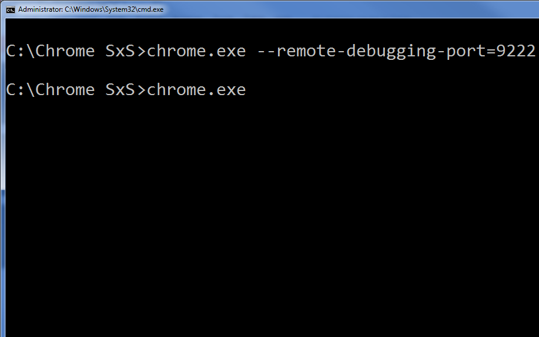
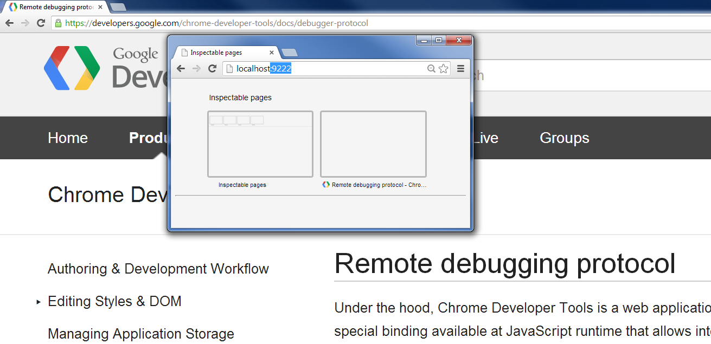
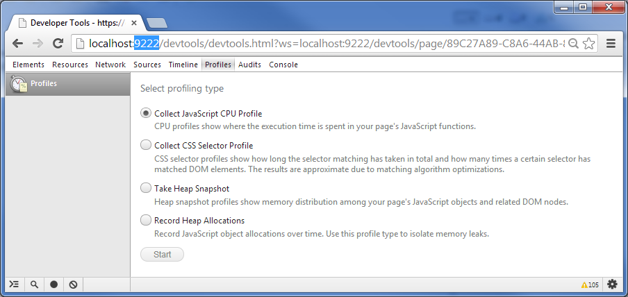
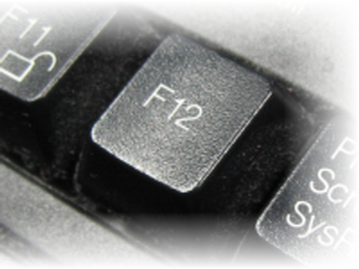
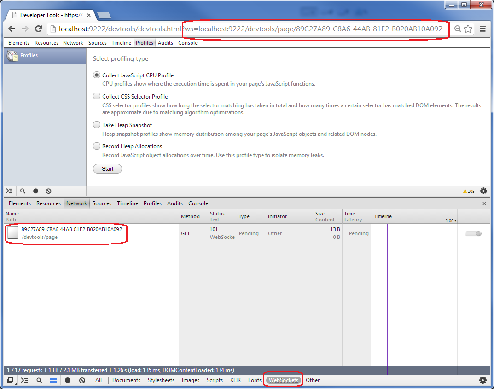
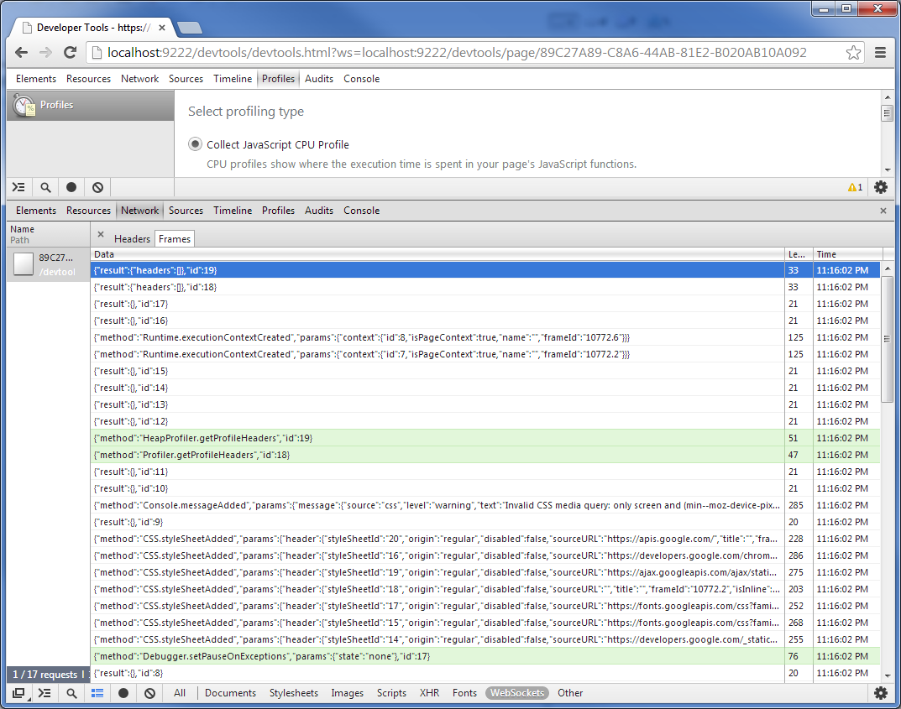
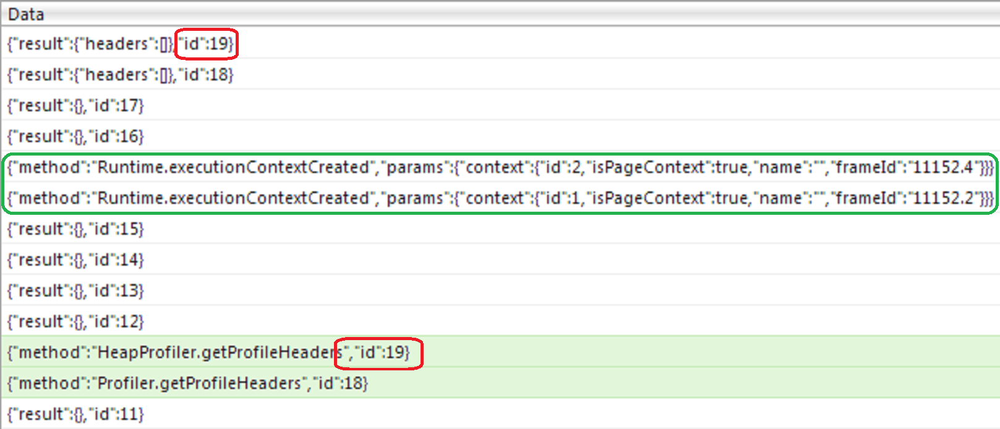
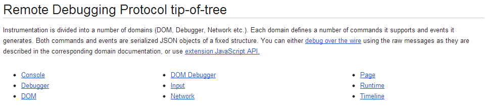

Chrome Remote Debugging Protocol

Created by Vladimir Petriko
Why?
- How dev tool works
- Single page applications
Look here first
https://developers.google.com/chrome-developer-tools/docs/debugger-protocol
Google Chrome Canary

* For presentation launch both Chrome Canary instances with --disable-web-security flag also

Under the hood...
When you navigate your client browser to the remote's Chrome port, Developer Tools front-end is being served from the host Chrome as a Web Application from the Web Server.

...Under the hood
Once loaded, Developer Tools establishes a Web Socket connection to its host and starts interchanging JSON messages with it.



Commands & Events

Remote Debugging Protocol tip-of-tree

Debugger extension API
- attach
- detach
- sendCommand
- getTargets
- --------------------
- onEvent
- onDetach
Time to Code!
steps.prerequisites()
.then(getInspectablePages)
.then(getTargetPage)
.then(createSocket)
.then(setupEventsLogging)
.then(initializePageSettings)
.then(startProfiler)
.then(executeTestAction)
.then(takeProfileResults)
.then(logResults)
Пыщ!
(Results will be here)
* Open sample/index.html page in your host Chrome Canary browser